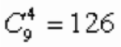

A table of size $3 \times 3$ $($as for playing tic-tac-toe$)$ is given. Four chips are put $($one each$)$ on four randomly selected cells. Find the probability that among these four chips there are three that stand in a row vertically, horizontally or diagonally.
There are in total  possible arrangements. Arrangements, where the chips occupy a vertical, horizontal or diagonal are easily counted: $8 \times 6$ = 48. Due to the randomness and equivocation of the arrangements, the required probability is 48/126 = 8/21.
8/21.